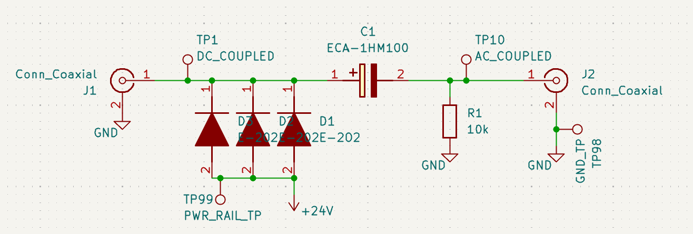
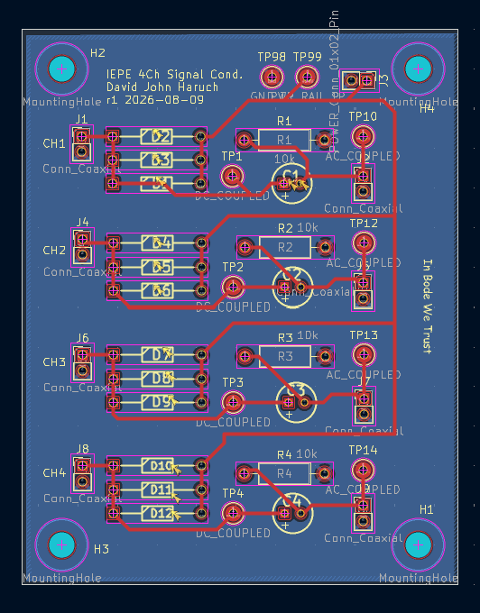
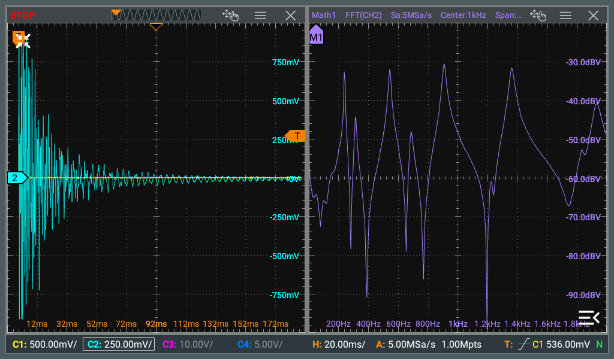

IEPE Signal Conditioner
Updated 07-27-2026
This web page describes a low-cost signal conditioner for powering IEPE sensors like accelerometers, microphones, load cells, and pressure sensors. Special thanks to Alex Reinhart's article listed as reference #1
Schematic, PCB
This circuit is based on the reference design published by PCB Peizotronics (reference #2), put into a housing with BNC connectors. It is a 2mA current regulating diode (or diodes) and high pass filter. The cutoff frequency of the filter can be user-adjusted with different resistor and capacitor. The power supply can come from a 24V+ linear bench supply, or 3x 9V batteries. An alternative IC based approach to replace the current regulating diodes would also work very well

A 2-layer PCB was designed for thru-hole components, room is left for up to 6mA supply (3x 2mA current regulating diodes). The ECAD files are in the github repo. I selected 10uF cap and 20kohm resistor for the AC coupling around 1Hz. Test points are included to see the DC bias voltage



Costed BOM @ QTY 10
| Part | Vendor | Part # | QTY | Cost/ea ($USD) |
|---|---|---|---|---|
| CRD | Semitec | E-202 | 4 | 1.17 |
| AC coupling cap | Panasonic | ECA-1HM100 | 4 | 0.099 |
| Resistor | SEI Stackpole | RNF14FTD20K0 | 4 | 0.044 |
| 2-Layer PCB | ~ | ~ | 1 | 4.72 |
| Bulkhead BNCs | Amphenol | 112575 | 8 | 2.22 |
| Enclosure 115x64x37 (Guitar Pedal Size) |
~ | ~ | 1 | 8.30 |
| Hookup Wire | ~ | ~ | ~ | 1.00 |
| Banana Plugs Bulkhead | Radiall | R941619000 | 2 | 4.09 |
Total $45.21
$10 of cost reduction is feasible by using "ebay/amazon" grade mystery parts especially the BNC connectors
For reference, PCB Peizotronics lowest cost 4ch signal conditioner is over $600--with many additional features so the price is understandable
Example Waveforms
Below data is collected using PCB Piezotronics 086C01 Impact Hammer and 352A10 Accelerometer. Even with a 12 bit oscilloscope in "hi-res" mode, the natural frequencies (w/ scope FFT function) can be clearly observed over 60dB of range and a clean FRF could be measured with post-processing of the data on a computer. An expensive 24bit ADC like NI4431 can be used be at higher cost for improved performance compared to a scope
